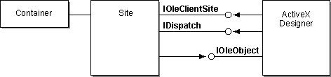
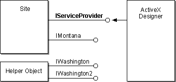

|
| ||
|
| ||
Updated: July 15, 1996
Summary
Hosts can provide a variety of services for design-time controls to use. Services are a convenient means of getting access to features implemented by the site. This document covers the following topics you need to understand if your design-time control will use services:
A service is a group of related interfaces that perform a task, such as finding the code attached to an object or displaying help. A host provides services to ensure that these tasks are accomplished in a uniform way across its contained objects.
ActiveX™ designers access services through their site. The interfaces that make up the service may be implemented on the site object or on any other object to which the site has access.
Siting and Containers
A container communicates with the ActiveX controls and designers it contains through a site. A site is a class implemented by the container. There is one site for each contained object. The site acts as an intermediary between the container and the object. When an ActiveX designer requires the use of a method or property of its container, it requests the feature through its site. This design lets the container know which object is making the request.
The site implements the IOleClientSite interface (or the IOleControlSite interface, if it contains ActiveX controls), and the ActiveX designer implements the IOleObject interface, as in the following figure.

At design time, the site calls IOleObject::SetClientSite, which gives the ActiveX designer a pointer to the site. Through this pointer, the ActiveX designer can use the site's IDispatch interface to change ambient properties.
Although the site provides useful information to the container about what the designer and other contained objects are doing, siting makes interactions indirect. To use interfaces implemented by the container, the ActiveX designer must issue requests through the site. Services provide an efficient architecture for locating and using these interfaces.
Providing Services through a Site
Services are groups of related interfaces. Typically, a service is defined for actions that are performed by a site. The service itself is defined by the site, but the interfaces that make up the service may be implemented by other objects on the site.
The service architecture provides a flexible, general means of making features accessable to contained objects. The flexibility comes from several important aspects of the design:

The figure shows four interfaces. The IServiceProvider interface provides access to services. All sites that support services implement this interface. ActiveX designers and other contained objects call the QueryService method of IServiceProvider to get pointers to the interfaces they want to use.
The other three interfaces illustrate hypothetical service implementations. The table shows the various combinations of services that can be defined. Each service has a unique service identifier (SID), similar to an interface identifier (IID). The SID is a globally unique identifier (GUID) that identifies the service in calls to QueryService.
| Service | Service and Interface Identifiers | Description |
| Montana service | SID_SMontana | Provides access to the Montana interfaces. |
| IID_IMontana | Montana interface. | |
| Washington service | SID_SWashington | Provides access to the Washington interfaces. |
| IID_IWashington | Original Washington interface. | |
| Washington2 service | SID_SWashington2 | Second version of the Washington service. |
| IID_IWashington | Original Washington interface. Same as IID_IWashington in SID_SWashington. | |
| IID_IWashington2 | Second version of the Washington interface, with different features. |
In the figure, the Montana service is implemented on the site object and the two Washington services are implemented on a separate object. The following configurations are also possible:
Because the IWashington interface is the same in both SWashington and SWashington2, both of these services can be implemented on the same object.
This design allows ActiveX designers and other embedded objects straightforward access to useful features of their containers. The container, in turn, can configure these features efficiently. All configurations are transparent to the ActiveX designer, and different containers may organize the services differently.
Services, Interfaces, and Object Identity
QueryService identifies an object that supports the requested service, with the returned pointer already set to the specified interface.
It's important to keep in mind the following:
Two different services (SID_SIdaho and SID_SMontana, for example) can both specify the use of a single interface (for example, IDispatch), even though the implementation of the interface may have nothing in common between the two services. This works because the following two hypothetical calls can return different objects:
hr = QueryService (SID_SMontana, IID_IDispatch, &pDisp) hr = QueryService (SID_SIdaho, IID_IDispatch, &pDisp)
Remember that object identity is not assumed if you ask for a different service identifier.
Services useful for ActiveX™ designers are defined in the Designer.h header file provided by Microsoft. The following code, taken from Designer.h, defines the SCodeNavigate service, which allows an extended object to display the code module attached to it.
// { 6d5140c4-7436-11ce-8034-00aa006009fa }
DEFINE_GUID(IID_ICodeNavigate, 0x6d5140c4, 0x7436, 0x11ce, 0x80, 0x34,
0x00, 0xaa, 0x00, 0x60, 0x09, 0xfa);
#define SID_SCodeNavigate IID_ICodeNavigate
#undef INTERFACE
#define INTERFACE ICodeNavigate
DECLARE_INTERFACE_(ICodeNavigate, IUnknown)
{
BEGIN_INTERFACE
// *** IUnknown methods ***
STDMETHOD(QueryInterface)(THIS_ REFIID riid, LPVOID FAR* ppvObj)
PURE;
STDMETHOD_(ULONG, AddRef)(THIS) PURE;
STDMETHOD_(ULONG, Release)(THIS) PURE;
// *** ICodeNavigate methods ***
STDMETHOD(DisplayDefaultEventHandler)(
THIS_ /* [in] */ LPCOLESTR lpstrObjectName
) PURE;
};
Every service is associated with an SID. Components that need to use a service pass the SID to IServiceProvider::QueryService. In the example, the SID for SCodeNavigate is SID_SCodeNavigate. Often, the SID is the same as the IID for one of the interfaces that belongs to the service. Here, SID_SCodeNavigate is defined to equal IID_ICodeNavigate.
The service includes the standard IUnknown interface and one or more additional interfaces. In the example, only one additional interface, ICodeNavigate, is defined. This interface contains one method, DisplayDefaultEventHandler.
Services provide several important advantages for ActiveX™ designers:
The following sections describe how to find and call services, and what the differences are between using services and using the QueryInterface method.
Finding a Service
To locate a service, an ActiveX designer calls the IServiceProvider interface, implemented by its site. The interface has the following definition:
interface IServiceProvider : IUnknown
{
HRESULT QueryService ( REFGUID rsid, REFIID iid, void ** ppvObj)
};
The input parameters to the QueryService method are the SID of the service being requested and the IID of the interface you want to use. In return, you receive a pointer to the requested interface if the host implements the service, or E_NOTIMPL if the host does not implement it.
For example, the following code fragment queries for the SCodeNavigate service. (Error handling has been omitted for brevity.)
hr = pClientSite->QueryInterface(IID_IServiceProvider, &pISP); hr = pISP->QueryService(SID_SCodeNavigate, IID_ICodeNavigate, &pICN);
The example calls QueryInterface on the site to get a pointer to the site's IServiceProvider interface. Using the returned pointer, it passes the SID of the SCodeNavigate service and the IID of the ICodeNavigate interface to QueryService. If the call is successful, QueryService returns a pointer to the ICodeNavigate interface. Through this pointer, the ActiveX designer can invoke the methods defined for ICodeNavigate.
In effect, the site performs the equivalent of the following for each call to QueryService:
pSite->QueryService (SID_SCodeNavigate, IID_IUnknown, &pUnk); pUnk->QueryInterface (IID_ICodeNavigate, &pICN); pUnk->Release();
The ActiveX designer receives a pointer through which it can directly access the requested interface. The site does not have to delegate each individual method call.
Calling a Service
After it has called QueryService to get a pointer to an interface that is part of a service, an ActiveX designer can simply call the interface through the pointer. For example, the following two lines of code get a pointer to the ICodeNavigate interface in the SCodeNavigate service, as described in the preceding section:
hr = pClientSite->QueryInterface(IID_IServiceProvider, &pISP); hr = pISP->QueryService(SID_SCodeNavigate, IID_ICodeNavigate, &pICN);
Assuming that the QueryService call returns without error, the following code fragment calls the DisplayDefaultEventHandler method of ICodeNavigate:
hr = pICN->DisplayDefaultEventHandler(lpMyObject);
Typically called in response to an event such as a mouse-click this method displays the default event handler for the object named in lpMyObject.
Differences between QueryService and QueryInterface
Although it might seem logical to call QueryInterface to find the interface you want to use, services are a more efficient means of getting the same capabilities.
The key difference between the QueryService and QueryInterface methods is that QueryInterface on an object returns an interface on the same object, whereas QueryService makes no such guarantee. QueryService on an object may return an interface on the same object or on a different object.
Because services need not be implemented on the site object, calling QueryInterface on the site to look for interfaces in a service is not guaranteed to succeed.
In addition, calling QueryInterface on an object you receive from QueryService is valid only for interfaces that are part of the service. Querying for any other interfaces results in an error status.
Currently, design-time controls in Microsoft® Visual InterDev™ may use the services listed in the following table. This service are accessable from Microsoft® C++ and from Microsoft® Visual Basic®. The services are exposed to Visual Basic using a special helper API that is part of the SDK. The helper API and the Service object it returns are documented below. These services are defined in the header file Designer.h.
| Service | Interfaces | Purpose |
| SApplicationObject | IDispatch | Returns the programmability interface for the host's add-in model. |
| SWebDesignControlContext | IDispatch | Returns an object which provides design-time control context information. |
| SBuilderWizardManager | IBuilderWizardManager | Returns an interface for retrieving builders. |
ApplicationObject Service
The SApplicationObject service provides access to a pointer to the host's add-in model. The add-in model is the top-level Application object, an Automation object that designers, wizards, and add-ins can use. Not all hosts implement this service, and different hosts define the add-in model differently. Refer to your host documentation for more information.
You can query the service for the IDispatch and IUnknown interfaces. For information on these interfaces, see the Automation Programmer's Reference.
The service identifier (SID) for this service is SID_SApplicationObject.
How to Get to Project Data Connections
Access to project data connections is done using the Application object returned by the ApplicationObject service. The ActiveProject property on the application object returns an IDispatch pointer for the active project. The DBConnections property on the active project object returns an IDispatch pointer for the collection of project data connections. Refer to the documentation on DBConnections and DBConnection in the Visual Basic section.
ServerLanguage Property
Retrieves the server language string from the Active Server Page file containing the control.
Comments
ServerLanguage is a read-only property that contains the string representing the current server language setting. This is determined by scanning the current file for the Active Server script language tag. If this tag does not exist, the default language is "VBScript." This setting can be used to adjust the script produced when providing run-time text during persistence. To use this property, use the IServiceProvider interface to query for the SID_SWebDesignControlContext service and request an IDispatch interface. Use GetIDsOfNames to retrieve the DISPID of the "ServerLanguage" property and then request the property value which will be a BSTR containing the server language string.
This is a more complex service that is documented in Invoking Builders and Wizards. Here we are listing methods specific to builders that can be invoked inside Microsoft® Visual InterDev™.
URLPicker.Execute Method
Invokes the URL Picker dialog box. The URL Picker is a builder that can be requested using IBuilderWizardManager.
HRESULT Execute( IDispatch* pdispAppObject, HWND hwndOwner, IServiceProvider* pspProvider, VARIANT* pvarURL LPCTSTR pszBaseURL, LPCTSTR pszAdditionalFilters, LPCTSTR pszcDlgTitle, VARIANT* pvarTargetFrame, long* pdwFlags, VARIANT_BOOL* pbRet );
Parameters
Return Values
The return value obtained from HRESULT is one of the following:
| Return value | Meaning |
| S_OK | Success. |
| E_INVALIDARG | One or more of the arguments is invalid. |
| E_FAIL | The dialog box could not be created. |
Comments
The Execute method invokes the URL Picker dialog box, which allows the user to select a file in the project and generate the associated URL. You must first retrieve a pointer to the URL Picker's IDispatch interface by using the IBuilderWizardManager interface. Pass CATID_URLBuilder as the builder category. Once you have the IDispatch interface, retrieve the DISPID of the "Execute" method by calling GetIDsOfNames. Once the dialog box is dismissed, the pvarURL parameter containing the selected URL.
The pdwFlags parameter can contain one or more of the following values:
#define URLP_SHOWTARGETFRAME 0x0001 // show target frame edit control // The following 3 are mutually exclusive #define URLP_CREATEURLTITLE 0x0002 // use "Create URL" title for dialog #define URLP_EDITURLTITLE 0x0004 // use "Edit URL" title for dialog #define URLP_CUSTOMTITLE 0x0008 // use custom title specified by user // The following 3 are mutually exclusive #define URLP_DOCRELATIVEURLTYPE 0x0010 // return doc relative URL #define URLP_ROOTRELATIVEURLTYPE 0x0020 // return root relative URL #define URLP_ABSOLUTEURLTYPE 0x0040 // return absolute URL // Make sure that these do not clash with the flag above // Any of the following two can be specified with a logical 'OR' // These flags determine the options available in the URL type combo box #define URLP_DISALLOWDOCRELATIVEURLTYPE 0x0080 // do not show "Doc Relative" #define URLP_DISALLOWROOTRELATIVEURLTYPE 0x0100 // do not show "Root Relative" #define URLP_DISALLOWABSOLUTEURLTYPE 0x0200 // do not show "Absolute"
GetService Helper Function
The GetService function can be used to retrieve the VIService object, which is implemented by the VBIServ.dll helper library. This object provides methods for invoking the Query Builder and for retrieving the ODBC handle from a connection. Call GetService passing the pointer to your control in a VARIANT as the first parameter and STR_VIService as the second parameter. The third parameter should be initialized with a reference to an IDispatch pointer that will hold the returned service object.
BOOL GetService( VARIANT* pvarObject, char* pszGuid, VARIANT* pvarService ) ;
Parameters
Return Values
True if the function is successful.
Comments
GetService returns a service object based on the GUID string that's passed in. This provides a way for a control to access services provided by the host. Specific services provided by Visual InterDev are documented elsewhere in this document.
VIService Service Object
This service object can be retrieved by using the GetService function and passing STR_VIService as the GUID string. It provides methods for invoking the Query Builder and retrieving the ODBC handle from a connection. This is an IDispatch object. Refer to the section titled Visual InterDev Services for Visual Basic for more information about the methods available on this object.
Visual Basic 5.0 Programmers
To make life simpler for the Microsoft Visual Basic programmer, we have provided a helper function that returns a VIService object. This object has methods that provide access to all of Microsoft Visual InterDev's services. The Data Grid sample control included in the SDK shows this in action. In the following descriptions, a service is just an object.
GetService Helper Function
Retrieves a service from the host based on a GUID string. The function declaration and GUIDs for the different services are in the vbiserv.bas found in the common directory in the VB samples directory.
Public Function GetService( vControl as Variant, strGuid as String oService as Variant ) as Boolean;
Parameters
Return Values
True if the function is successful.
Comments
GetService returns a service object based on the GUID string that's passed in. This provides a way for a control to access services provided by the host. Specific services provided by Visual InterDev are documented elsewhere in this document.
VIService Service Object
This service object is returned by the GetService function call and lets you work with builders and data connections.
GetBuilder Method
Retrieves a builder object associated with a specific GUID.
Public Function GetBuilder( strGUID as String, oAppObject as Object, lOwnerWindow as Long, oBuilder as Object ) as Boolean;
Parameters
Return Values
True if the function is successful.
Comments
The GetBuilder method retrieves the builder object associated with a specific GUID. Each builder will have a different method of invocation. Refer to the documentation for the specific builder you're using for information on how to invoke it.
GetDBConnections Method
Retrieves an object containing the list of data connections currently available. See later section for methods and properties for the DBConnections collection.
Public Function GetDBConnections( oConnections as DBConnections ) as Boolean;
Parameters
Return Values
True if the function is successful.
Comments
The GetDBConnections method retrieves an object that contains a list of the data connections currently available. This connection collection is documented under DBConnections above.
GetConnectionHandle Method
Retrieves an ODBC handle for a specific data connection.
Public Function GetConnectionHandle( oConnection as DBConnection, hConnection as Long ) as Boolean;
Parameters
Return Values
True if the function is successful.
Comments
The GetConnectionHandle method retrieves an ODBC handle from a DBConnection object. This handle can be used with various ODBC driver calls to work directly with the connection. This makes it possible to do such things as query the connection for a list of tables or execute a query on the connection. When you're done with the connection handle, you must call ReleaseConnectionHandle on the same connection object.
ReleaseConnectionHandle Method
Releases the ODBC handle for a specific data connection.
Public Function ReleaseConnectionHandle( oConnection as DBConnection ) as Boolean;
Parameters
Return Values
True if the function is successful.
Comments
The ReleaseConnectionHandle method releases the ODBC handle previously obtained from a call to GetConnectionHandle. Once this call is complete, the connection handle is no longer valid.
CallSQLBuilder Method
Invokes the SQL Query Builder. The SQL Builder included in Visual InterDev is implemented as a special builder with its own service for getting to it.
Public Function CallSQLBuilder( oControl as Object, oConnection as Object, strOwnerName as String, strPropertyName as String ) as Boolean;
Parameters
Return Values
True if the function is successful.
Comments
The CallSQLBuilder method invokes the SQL Query Builder, which allows the user to visually create an SQL statement. When the user is through, the resulting SQL statement is stored in the property that is named by the fourth parameter.
This collection will give you access to the project data connections.
Add Method
Adds a new data connection to the project.
Public Function Add( strDataSourceName as String, strConnectString as String ) as DBConnection;
Parameters
Return Values
A DBConnection object.
Comments
Adds a new data connection to the project. The sConnectionString can optionally include Server, UserID, and Password. If the DataSourceName is null, then one will be generated. If the ConnectionString is null, a new connection will be created and the ODBC Service will generate this string. If the complete ConnectString is not specified, then the ODBC Dialog will be presented to collect the missing information.
Item Method
Returns an item from the connection list.
Public Function Item( varItem as Variant, ) as Variant;
Parameters
Return Values
A DBConnection object.
Comments
Used to return a unique database connection from the database connection collection either by ID or by name.
Remove Method
Removes a connection from the connection list.
Public Sub Remove( varItem as Variant, );
Parameters
Return Values
Success or trappable run-time error.
Comments
Used to remove a database connection from the database connection collection.
Cleanup Method
Calls the cleanup method on each DBConnection in the connection list.
Public Sub Cleanup();
Return Values
Success or trappable run-time error.
Count Property
The number of database connections in the project.
Public Property Count() as long;
Connect Method
Establishes a database connection in the project or if the "Connected" property is false, attempts to re-connect to data source.
Public Sub Connect();
Return Values
Success or trappable run-time error.
Name Property
Contains the name of the ODBC Connection in the Project.
Public Property Name(strName as String) as String;
Parameters
Return Values
The Database Connection String (Display Name).
Parent Property
Returns the collection of project data connections.
Public Property Parent() as DBConnections;
Return Values
A pointer to the CDBConnections Collection Object.
ConnectionString Property
Contains the complete text of the ODBC Database Connection String.
Public Property ConnectionString(strConnect as String) as String;
Parameters
Return Values
A String value representing the ODBC ConnectString.
ConnectionTimeout Property
Contains the timeout interval in seconds to wait for a connection to the ODBC device to take place.
Public Property ConnectionTimeout(lngTimeOut as Long) as Long;
Parameters
Return Values
The command timeout interval in seconds.
Connected Property
Indicates whether the connection is connected to the data source.
Public Property Connected() as Boolean;
Return Values
A Boolean indicating whether the connection is currently connected.
RuntimeUser Property
Contains the Run-time User Name that will be used for anonymous connections.
Public Property RuntimeUser(strUserName as String) as String;
Parameters
Return Values
The run-time user name that will be used for this data connection.
RuntimePassword Property
Contains the Run-time User Password that will be used for anonymous connections.
Public Property RuntimePassword(strPassword as String) as String;
Parameters
Return Values
The run-time user password that will be used for this data connection.
RuntimeCursorLocation Property
Contains the location where the data connection cursor will reside. Either Zero (default) for the Client or One for Server.
Public Property RuntimeCursorLocation(lngCursorLocation as Long) as Long;
Parameters
Return Values
The run-time user's preferred cursor location.
ServerLanguage Property
Retrieves the server language string from the Active Server Page file containing the control.
Public Property ServerLanguage() as String;
Comments
ServerLanguage is a read-only property that contains the string representing the current server language setting. This is determined by scanning the current file for the Active Server script language tag. If this tag does not exist, the default language is "VBScript." This setting can be used as an indicator of which script language should be produced when generating run-time text. To use this property, call GetBuilder and pass ControlContextGuid as the GUID string. This returns an object which exposes the ServerLanguage property.
Did you find this material useful? Gripes? Compliments? Suggestions for other articles? Write us!
© 1999 Microsoft Corporation. All rights reserved. Terms of use.